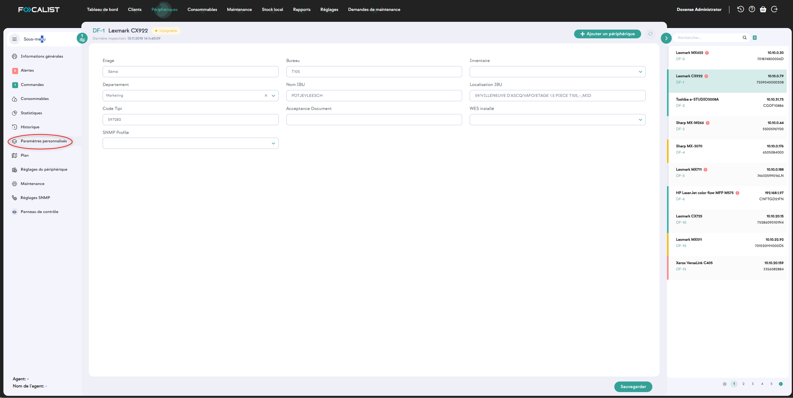

Clients
Mis à disposition de chaque client, le module Client affiche toutes les informations relatives à un client et sert de panneau de configuration.
Infomations générales
L’onglet Clients contient la liste des clients déclarés, avec des informations élémentaires sur leur état actuel.
Les informations affichées selon les colonnes sont les suivantes :
-
Nom du client : comme l’indique la colonne, il s’agit du nom de l’entreprise cliente, sous lequel est indiqué le le site principal (cliquez sur le nom du client pour accéder à ses paramètres)
-
Préfixe : abréviation permettant de désigner le client de manière courte.
-
Sites : nombre de sites ajoutés pour un client (en cliquant dessus, vous accéderez aux paramètres des sites)
-
Type de facturation : représente le mode de facturation pour chaque client
-
Agent : dernier agent utilisé avec la date et l’état actuel
-
Nombre de périphériques : correspond aux informations sur le nombre de périphériques associés à un client (en cliquant sur ce lien, vous accédez à l’onglet des périphériques du client)
-
Volumes du mois dernier : nombre d’impressions réalisées par chaque client le mois précédant le mois courant
-
Action : en cliquant sur le bouton,, vous pouvez éditer les paramètres du client en vue de les modifier ou désactiver le client.

La recherche porte sur les valeurs des colonnes "Nom" et "préfixe du client".
Le bouton Options d'affichage situé en bas à droite permet de configurer les informations affichées par défaut pour chaque client (comme le nombre de colonnes et de lignes visibles, par exemple) : 
Mis à disposition de chaque client, le module Client sert de panneau de configuration.
Vous pouvez y accéder en cliquant sur le nom de l'entreprise ou en sélectionnant l'option de modification parmi les actions disponibles dans l'onglet Client. Dans ce module, vous pouvez personnaliser les paramètres de l'entreprise sélectionnée, qui sont divisés en sections individuelles en fonction de leur sujet et de leur fonctionnalité. Chaque section sera examinée en détail.
Informations sur le client
Dans cette section, cliquez sur le bouton Editer  pour modifier les données du client (saisies lors de l'ajout) : Nom du client, Préfixe, Numéro d’identification fiscal, Langue, Adresse, Code postal, Ville, Devise, Pays et Activité.
pour modifier les données du client (saisies lors de l'ajout) : Nom du client, Préfixe, Numéro d’identification fiscal, Langue, Adresse, Code postal, Ville, Devise, Pays et Activité.
Actions
Depuis la liste Clients, vous pouvez consulter les statistiques d'un site, éditer les informations d'un site ou supprimer le site en cliquant sur les boutons d'actions situés à droite
-
Statistiques : affiche des informations statistiques sur les pages imprimées, par mois ou par jour sur un site :
-
Editer : vous permet de modifier/mettre à jour les informations sur les sites, telles que l’adresse et le coordinateur. Vous pouvez choisir un coordinateur dans la liste ou en créer un nouveau qui sera ajouté à la base de données après enregistrement.
-
Supprimer : cette option permet de supprimer définitivement des sites sélectionnés parmi les emplacements d’un client.
Vous pouvez également Activer ou Désactiver les sites sélectionnés en cochant/décochant la case de la colonne Actif. Si le site est actif, il peut être sélectionné lors de l’ajout d’un nouveau périphérique. S’il est défini comme inactif à ce moment-là, il n’est pas affiché.

Statistiques
L'encart Impressions dans l'entreprise contient des informations élémentaires sur les impressions effectuées par ce client. 
Les statistiques ont été divisées en quatre libellés :
-
Informations sur le client : coordonnées de l'entreprise cliente
-
Impressions dans l’entreprise : représentation visuelle des pages utilisées, qui peut être affichée par jour ou par mois
-
Modèle de périphériquse : liste des périphériques ainsi que les pages imprimées (en monochrome et en couleur) pour chaque périphérique
-
Sites : liste de tous les sites associés au client, avec les pages imprimées (en monochrome et en couleur) pour chaque site.
Sites
Cet encart contient des informations sur les emplacements des imprimantes pour un client donné. Chaque emplacement dans le tableau contient par défaut les informations suivantes :
-
Nom du site : nom donné au site
-
Adresse : adresse exacte avec nom de la rue, le numéro, le code postal et la ville
-
Coordinateur, personne chargée de réaliser les activités de maintenance sur le site
-
Nombre de périphériques : périphériques présents sur le site
-
Actif : (actif ou inactif)
-
Actions (Statistique, Modifier, Activer/Désactiver, Supprimer)

Prix
Prix est un module qui vous permet de spécifier le type de facturation pour l'entreprise choisie. Vous pouvez choisir votre type de facturation en cliquant sur « Paramètres avancés » et en sélectionnant un type de facturation dans la liste déroulante. L'utilisateur ne peut pas créer ou modifier le modèle de règlement, il a seulement la possibilité de modifier le modèle sélectionné.
Il existe quatre types de facturation différents, mais chacun d'entre eux a une option commune à choisir en haut. Il s'agit du « Type ». Cette option permet de définir l'éventail des données nécessaires à l'établissement des rapports de facturation.
Utiliser une méthode simple de facturation
Dans les paramètres par défaut du client, l’application utilise un modèle de facturation simple, visible dans l’onglet "Prix", qui prend en compte les prix indiqués lors de l’enregistrement du client pour le monochrome, la couleur et la numérisation. L’utilisateur peut modifier les prix à tout moment pendant le paramétrage.
Remarque : il convient de rappeler que toute modification de ces prix prend effet à partir du début de la période comptable en cours. Les périodes de facturation précédentes ne seront pas affectées.
L’utilisateur peut également définir le nombre de pages disponibles dans l’abonnement pour le périphérique. Il s’agit d’une option supplémentaire (système d’abonnement), qui permet au client de déterminer le nombre de pages imprimées qui est facturé dans les conditions générales du contrat et chaque page au-delà du seuil fixé sera facturée aux prix spécifiés dans la première section.

Veillez à cliquer sur "Enregistrer", car, faute de quoi les modifications ne seront pas saisies dans le système. Cela s’applique à tous les types de facturation.
Prix personnalisé pour le modèle de périphérique
Le prix personnalisé pour le modèle de périphérique permet de définir des prix uniques pour une imprimante donnée. Dans ce modèle, il y a des seuils de prix par défaut comme dans le précédent, mais il est également possible de définir des tarifs pour un modèle d’imprimante spécifique ou une vraie imprimante connectée.
En cliquant sur le bouton "Ajouter", une fenêtre contenant les listes "Fabricant" et "Numéro de modèle" apparaît. Vous devez choisir une option dans chaque liste et appuyer sur Enregistrer :

L’administrateur peut définir des prix individuels pour plusieurs modèles de périphériques en même temps :
Prix personnalisé pour le nombre total de pages imprimées
Le modèle est basé sur plusieurs seuils. Cette option vous permet de fixer le prix des impressions en définissant plusieurs seuils de volume spécifiques, qui sont définis individuellement par le client. Le système calcule le montant du contrat en fonction des prix donnés, c’est-à-dire en fonction du nombre de pages imprimées.
En cas de dépassement du nombre de pages imprimées correspondant au premier seuil, le système calcule le prix de la page indiqué qui correspond au deuxième seuil. Le nombre de seuils de prix est arbitraire et dépend des besoins du client :

Remarque : vous devez utiliser l’option "Enregistrer" lorsque vous avez terminé. Autrement, le système ne se souviendra pas des seuils de prix définis précédemment.
Exemple :
Le client a imprimé 13 207 pages en monochrome et 11 216 pages
Le montant mensuel facturé sera calculé de la manière suivante :
MONO :
|
DE |
À |
QUANTITÉ |
PRIX |
PRIX FINAL |
|
1 |
100 |
100 |
10 |
1000 |
|
101 |
1000 |
900 |
8 |
7200 |
|
1001 |
10000 |
9000 |
6 |
54000 |
|
10001 |
∞ |
3207 |
4 |
12828 |
|
SOMME |
|
75028 |
||
Couleur :
|
DE |
À |
QUANTITÉ |
PRIX |
PRIX FINAL |
|
1 |
100 |
100 |
12 |
1200 |
|
101 |
1000 |
900 |
10,5 |
9450 |
|
1001 |
10000 |
9000 |
7,75 |
69750 |
|
10001 |
∞ |
1216 |
5,20 |
6323,2 |
|
SOMME |
|
86723,2 |
||
Remarque : si le contrat prévoit un nombre de pages imprimées par mois pour lequel vous ne serez pas facturé, vous devez utiliser le « système d’abonnement ».
Facturation au consommable
Initialement, ce modèle est vide. Pour l’utiliser, il faut d’abord ajouter un agent et rechercher un nouveau périphérique sur le réseau. Après avoir lancé une recherche sur le réseau, vous devez ajouter un périphérique trouvé. Les consommables seront détectés et ajoutés à cet endroit. Si l’agent n’a pas trouvé le périphérique, vous ne pourrez rien définir dans ce modèle. L’application vous permet de fixer un prix pour chaque consommable.
Après les avoir saisies dans le système, vous devez utiliser l’option "Enregistrer". Autrement, le système ne se souviendra pas des modifications.
Remarque : le temps nécessaire au chargement des consommables est parfois loin. Si vous êtes sûr d’avoir déjà ajouté des périphériques, restez patient.
Coordinateur
Sous l’onglet "Coordinateur" figure la liste des coordinateurs saisis dans la configuration du client. Comme indiqué précédemment, les coordinateurs sont des personnes chargées de la maintenance des périphériques sur des sites dédiés ou dans l’ensemble de l’entreprise cliente.
Chaque client dispose d’un coordinateur principal qui peut être choisi par défaut lors de l’ajout de nouveaux sites au sein de l’entreprise cliente. Le coordinateur principal est désigné par une coche verte dans la colonne Coodinateur principal dans la liste des coordinateurs.
L’administrateur a la possibilité de cliquer sur le bouton "Ajouter un coordinateur" :

Lorsque vous ajoutez un coordinateur, vous pouvez le désigner comme coordinateur principal de votre client ou le faire plus tard si nécessaire, soit depuis la liste, soit dans l'interface d'ajout.
Notifications
Dans l’onglet "Notifications", l’utilisateur de l’application peut gérer les informations envoyées directement à la boîte de réception.
Lors de l’aperçu, les notifications ont été séparées en catégories comme suit :
-
Notifications des périphériques
-
Notifications de consommable
-
Notification par alerte SNMP
-
Notification des agents
-
Autres notifications

Pour activer la notification sélectionnée, vous devez cliquer sur le bouton ON/OFF qui se trouve à côté d’une notification. Vous pouvez ensuite rédiger un courriel personnalisé ou sélectionner des destinataires dans la liste.
Vous pouvez également choisir la fréquence de l’e-mail.
Personnaliser le message électronique
Cette fonction vous permet de personnaliser l’e-mail qui sera envoyé. Vous pouvez ajouter des informations supplémentaires en fonction de vos préférences.

Remarque : chaque client possède différents paramètres, ce qui signifie que votre paramètre s’appliquera uniquement au client que vous êtes en train de modifier.
Agent
Sous l’onglet "Agent"  s'affiche la liste des agents du client.
s'affiche la liste des agents du client.
Des informations telles que les noms dse agents, leur état de connexion actuel ainsi que des actions telles que la modification ou la suppression d’agents sont affichées.
Si le client sélectionné ne compte qu’un seul agent, les informations de cet agent sont directement affichées.
État :
-
Nouveau - ajouté dans l’application serveur mais non connecté à des agents sur les périphériques.
-
Connecté - connexion fonctionnant correctement
-
Ambigu - plusieurs agents possèdent des états différents
-
Déconnecté - Impossible de se connecter à l’agent
Qu’est-ce qu’un agent ? Pourquoi dois-je l’installer ?
-
Vous pouvez considérer un agent comme une sorte de proxy qui permet à Focalist d’accéder aux imprimantes.
-
Un agent doit être installé sur l’ordinateur pour chaque réseau auquel des imprimantes sont connectées : ce sont des agents de réseau et chaque réseau doit avoir un agent logique différent dans l’onglet Client > Agent.
-
Dans le cas d’une imprimante USB, vous devez installer un agent USB. Pour fonctionner correctement, l’imprimante doit être connectée à l’ordinateur avec un agent USB.
-
Pour un agent logique, dans l’onglet Client > Agent, vous pouvez avoir plusieurs agents USB connectés. Vous pouvez connecter un agent de réseau et plusieurs agents USB à un agent logique.
-
L’agent USB n’est pas disponible par défaut. Pour le débloquer, vous devez contacter l’assistance.
-
Les agents permettent d’accéder à distance au panneau de l’imprimante, mais ils ne sont pas disponibles par défaut. Pour le débloquer, vous devez contacter l’assistance.
Paramètres de l’Agent

Informations sur les agents
Cette section contient des informations sur l’agent sélectionné, notamment :
-
Nom de l’agent - nom donné à l’agent. Nous recommandons de donner des noms qui peuvent être facilement identifiés avec le périphérique sur lequel l’agent est installé.
-
Clé d’agent - utilisée pour connecter les agents au serveur, nécessaire lors de l’installation de l’agent.
-
Version - information sur la version de l’agent actuellement utilisée
-
Informations sur le système - Adresse IP à laquelle l’agent de réseau est installé.
Révoquer un certificat
Chaque agent logique du serveur ne peut avoir qu’un seul agent de réseau. Si vous voulez réinstaller un agent ou l’installer sur un autre périphérique, vous devez révoquer le certificat du précédent. Cliquez sur le bouton Révoquer le certificat pour révoquer l'agent au niveau du serveur.
Inspection des consommables et compteurs
Dans cette partie, vous pouvez concevoir un planificateur chargé de surveiller les actions de l’Agent.
3 actions d'analyse sont possibles :
-
Inspection des consommables et compteurs
-
Relève des alertes
-
Analyse du réseau
Outre le paramétrage du planificateur, vous pouvez également utiliser l’option « Analyser maintenant » pour vérifier l’état actuel des périphériques. En outre, le programmateur peut également être exclu par le bouton ON/OFF qui se trouve à gauche du nom du programmateur.
Ajouter un nouvel agent
Pour ajouter un nouvel agent, cliquez sur le bouton dédié situé dans le coin supérieur droit et saisissez le nom du nouvel agent. La procédure d’installation et d’ajout est décrite dans Installation de l’agent.
Configuration des commandes
La configuration des commandes est une fonctionnalité importante qui améliore le processus de mécanisation du système.
Grâce à cette option, Focalist détermine avec précision le niveau de stock à partir duquel le système génére automatiquement une commande, ce qui simplifie la gestion des livraisons.
Méthode de génération des commandes
L'onglet "Configuration des commandes" donne accès à un formulaire qui permet de générer des commandes automatiques :

Deux méthodes de configuration des commandes sont possibles :
-
"Proactive" permet à l'utilisateur de préciser le nombre de jours prévus jusqu'à l'épuisement du matériel. Une fois cette durée estimée atteinte, le système génère automatiquement une commande.
La méthode proactive ne peut être mise en œuvre que pour les imprimantes qui ont plus d'un mois d'historique d'impression et, idéalement trois mois pour établir des prévisions.
-
"Niveau" permet de fixer la limite du stock de matériel en pourcentage. Lorsque cette limite est atteinte ou dépassée, le système génère immédiatement une commande, soutenant ainsi efficacement le processus de gestion des approvisionnements.
Cette flexibilité permet d'adapter le processus de commande aux besoins individuels et à l'évolution des conditions commerciales, contribuant ainsi à une gestion efficace des approvisionnements.
Quelle que soit la méthode choisie, les informations suivantes s'affichent :
Niveaux pour les toners :
les toners mono (monochromes)
les toners couleur
Niveaux pour les tambours :
Tambour mono (monochrome)
Tambour couleur
Niveaux pour la partie MK (Maintenance et composants clés), comprenant :
Consommable d'entretien (par exemple, huiles, filtres, rouleaux, bandes de transfert, etc.)
Toner usagé

Une autre fonction importante de Focalist est la possibilité de bloquer les commandes de consommables dont l'efficacité est inférieure à un certain pourcentage, la performance minimale acceptable étant définie préalablement. Ainsi, lorsque le rendement d'un consommable tombe en-dessous de cette valeur, le système empêche de passer une commande pour ce consommable. Il s'agit d'un outil de contrôle efficace qui permet d'optimiser le coût des ressources.

Dans le sous-onglet "Remplacement" figure l'activation de l'alarme en cas d'installation incorrecte du matériel.
Grâce à cette fonction, l'administrateur peut configurer le système de telle sorte qu'une alarme se déclenche si le consommable n'est pas installé correctement.
Il s'agit d'une mesure de protection importante qui permet d'éviter les problèmes liés à une installation incorrecte des consommables, qui pourrait affecter négativement la qualité des impressions et l'efficacité de l'imprimante.
L'utilisateur a également la possibilité de gérer :
-
les réglages du niveau maximum en pourcentage du moment où le matériel doit être remplacé.
-
l'activation de l'alarme si le nouveau modèle de consommable ne correspond pas à celui qui a été commandé.
-
l'activation de l'alarme si le consommable a été remplacé par celui d'un autre appareil.
Par exemple, nous supposons qu'un toner ayant un niveau inférieur à 80 % n'est pas neuf, mais a déjà été utilisé dans une autre imprimante (sauf lorsqu'un périphérique est ajouté au système : dans ce cas, le niveau de consommable n'est pas vérifié). En outre, si un numéro de série est présent, nous vérifions si ce numéro figure déjà dans notre base de données.
-
l'activation de l'alarme s'il n'y a pas eu de commande générée précédemment pour le matériel permet de vérifier qu'une commande existe pour le matériel avant de tenter un remplacement. Si la commande n'existe pas, l'alarme est alors activée.
-
l'activation de l'alarme si la commande pour le consommable n'a pas encore été envoyée.

Les commandes bloquées ne sont jamais automatiquement marquées comme "expédiées". Elles nécessitent toujours un traitement manuel.
Vérifier si le consommable a été correctement installé
Après avoir changé le consommable, le programme vérifie s’il a été installé correctement. Si l’option de vérification du consommable est activée, l’état affiché est : "Toner remplacé" lorsque le toner est correctement installé.
En cas de mauvaise installation, Focalist ne change pas le statut de la commande.
En revanche, si l’option n’est pas définie, le statut de la commande est toujours modifié en "Toner remplacé", que l’échange ait été effectué correctement ou non.
Remarque : la pocédure d’installation correcte par statut est la suivante :
Nouvelle (Non expédiée) > Installation en cours > À remplacer > Toner remplacé
Après l’envoi d’une notification, marquer les commandes de consommables comme expédiées
Si cette option est activée, l’application change le statut de la commande en "Installation en cours" après l’envoi de la commande.
Cette notification est utile lorsque la case précédente est cochée.
Si cette option n’est pas activée, le statut de la commande de consommables sera défini comme "Nouvelle (non expédiée)".
Avec l’activation de l’option "Vérifier l’installation", l’état doit être modifié manuellement sur "Installation en cours".
Après l’envoi d’une notification, marquer les commandes de pièces comme expédiées
Comme pour les consommables dont il a été question plus haut, mais pour les pièces.
Bloquer la commande de toner, si son efficacité est inférieure à (%)
Les consommables possèdent leur propre efficacité : par exemple, si un consommable donné a une capacité de 1 000 feuilles, mais qu’en réalité il n'imprime que 500, cela signifie que son efficacité est de 50 %.
Le rendement du consommable est proportionnel à la quantité de consommables utilisée et aux pages pour lesquelles cette quantité était suffisante.
Périphériques à compléter
Cette section affiche la liste des périphériques qui ne sont pas pris en compte par les agents lors de l’analyse du réseau.
Pour rendre l'un de ces périphériques actif, cliquez sur le bouton Activer à droite du périphérique, puis confirmez l'activation.
à droite du périphérique, puis confirmez l'activation.
Si vous souhaitez les supprimer, cochez la case à gauche du périphérique, puis cliquez sur le bouton "Supprimer"  . situé en haut à droite dans le bandeau, puis confirmez la suppression.
. situé en haut à droite dans le bandeau, puis confirmez la suppression.
Factures
Les factures permettent de suivre les paiements des clients grâce aux informations affichées.
Pour ajouter une facture, cliquez sur le bouton Ajouter une facture, et indiquez les créances du client.

Après avoir ajouté des factures, vous pouvez :
-
Modifier : les données des factures et télécharger le fichier
-
Ajouter un paiement : le montant total peut être payé en plusieurs fois. Pour un aperçu global plus clair, chaque paiement peut être ajouté séparément
-
Paiements, affiche la liste des paiements pour les factures sélectionnées
-
Supprimer : la facture de la liste (toutes les données de cette facture seront perdues).
Exemple d’enregistrement de factures :

Gestion des plans d'étage
Focalist permet d'ajouter des plans afin d'y localiser les périphériques d'impression du parc.
Pour ajouter un plan, cliquez sur le bouton Ajouter un nouvel étage. Dans l'interface d'édition de l'étage, indiquez la localisation, le numéro de l'étage et glissez le fichier contenant le plan de l'étage :
:
Paramètres personnalisés
Les paramètres personnalisés de Focalist permettent de personnaliser et d'étendre la surveillance du parc d'imprimantes et la génération de rapports.
Cette fonction permet aux administrateurs du parc de définir leurs propres paramètres en fonction des besoins spécifiques de leur entreprise. Par exemple, pour
-
une meilleure organisation des équipements - une gestion plus facile du parc d'imprimantes grâce à la catégorisation et à l'étiquetage basés sur des critères personnalisés.
-
Des rapports efficaces - la possibilité de générer des rapports qui incluent des paramètres supplémentaires définis par l'utilisateur.
-
Simplification de la maintenance et de l'entretien - attribution d'informations sur les inspections, les garanties et l'entretien à des appareils spécifiques.
-
Intégration aux processus d'entreprise - adaptation du système de surveillance des imprimantes aux procédures internes de l'entreprise.
Les paramètres personnalisés permettent d'ajouter des informations supplémentaires aux périphériques surveillés, telles que :
-
L'emplacement du périphérique (par exemple, l'étage, le service, le numéro de la pièce),
-
La personne responsable du périphérique.
-
L'état ou la date d'expiration du contrat de service,
-
La génération d'étiquettes supplémentaires (par exemple, le code interne de l'entreprise, le numéro d'inventaire).
